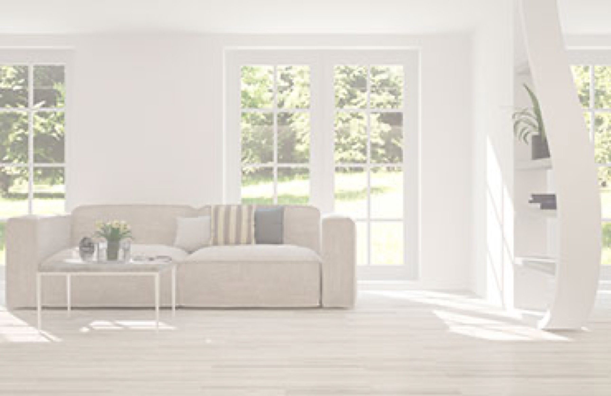

Tessuti

Le collezioni intessutoitalia, comprese GreenFabrics e Aquaclean, campione per campione.

Lo showroom intessutoitalia a Noci (BA): tessuti, pelli e microfibre dal vivo, su appuntamento.

Via Repubblica 36/F, Noci (BA).
Ti aspettiamo.
Tessuti, pelli e microfibre in centinaia di colori: qui li sfiori, in showroom li tocchi davvero.


Lo showroom
A Noci, nel cuore della Puglia, centinaia di tessuti, pelli e microfibre da vedere e toccare con mano.
Il nostro team ti accompagna nella scelta del rivestimento giusto: mano, colore, resistenza, manutenzione.
Tutto il campionario in un solo posto, da sfogliare e mettere a confronto.
Le collezioni intessutoitalia, comprese GreenFabrics e Aquaclean, campione per campione.

Pelli e finte pelli per l'imbottito: la grana e la mano si capiscono solo toccandole.

Microfibre in tanti colori, morbide e facili da pulire, per l'uso di tutti i giorni.
Gli ambienti dove vedere i tessuti sui divani, alla luce giusta.




Prenota la visita
Ti riceviamo su appuntamento: chiamaci al +39 080 497 7274 o scrivici a info@inpelleitalia.it.